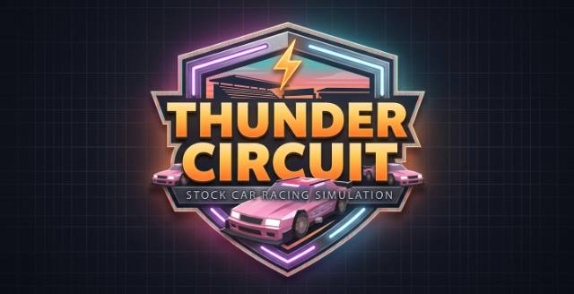

Arcade · rated Everyone 10+ · free browser game
Play Thunder-Circuit Free Online

Thunder-Circuit is stock-car racing on a low-poly oval at sunset, with packed grandstands and a great deal of engine noise. Drafting behind the car ahead genuinely helps, and braking early enough to hold your line matters more than holding the throttle down. Race the line, not just the pack. Season progress saves locally, so a championship can be picked back up later.
How to play Thunder-Circuit in your browser
Master the Line: Maintain the optimal racing line through high-banked turns and tight chicanes to preserve maximum speed.
Drafting: Slipstream behind opponents on straightaways to build momentum and execute high-speed slingshot passes.
Pit Strategy: Manage tire degradation and fuel levels during longer simulation races, timing your pit stops to stay ahead of the pack.
Tune & Customize: Spend race earnings to upgrade engine power, handling, and custom body paint liveries.
About this free browser game
Low-poly cars against a synthwave sunset, with a stadium that looks considerably better than its file size suggests. The handling rewards smoothness: brake early, hold your line through the banking, and let the draft do some of the work on the straight. Keyboard and gamepad both work, and it all runs in the browser with nothing to sign into.
Content rating: Everyone 10+
Cartoon peril or a difficulty curve that assumes some reading and persistence. Nothing here would upset a child; some of it would frustrate a very young one.
These are our own labels rather than an official rating, and we apply them conservatively — anything on a boundary goes in the higher tier. How the three tiers work, and which games suit which ages, is set out in our guide for parents. If you think this one is in the wrong tier, tell us.
Get better at Thunder-Circuit
We wrote a full guide: best games for short sessions. More strategy in all guides.
What it is like to play
Thunder-Circuit is designed for the spare 5 minutes, not a 2-hour session. No daily rewards, no energy system, no shop that sells power. You open it, play a round, close it. High score saves locally, so you can beat your own best next time without an account.
If you like quick runs, try Pop-a-Lock, Balance Ball and Sky Dodge.
FAQs
Does Thunder-Circuit work offline?
Yes, after first load. Open it once on WiFi, then turn on airplane mode and refresh — it loads from service worker cache. See what offline means.
Is it free?
Yes, free in browser, no download, no account. Ads on this page and occasional ads between rounds pay for hosting. Nothing in the game is locked behind watching an ad.
Is it safe for kids?
It is rated Everyone 10+. Cartoon peril or a difficulty curve that assumes some reading and persistence. Nothing here would upset a child; some of it would frustrate a very young one. See our parent's guide for age-by-age suggestions.
More to play: open the vault for free browser games, or read the guides for offline tips.